Configuración de DHCP Server sobre un bridge mediante el asistente de Router OS.
Índice
Introducción
Escenario a configurar
Estado inicial esperado del router
Creación del servicio DHCP Server mediante la ejecución del asistente
Comprobación de la configuración aplicada
Validación del servicio DHCP
Comprobación de conectividad entre el cliente y el router
Eliminando la configuración aplicada
Introducción
En este documento se aborda la creación de un servicio DHCP Server utilizando
el asistente (DHCP Setup) integrado en RouterOS. Este método guiado permite
desplegar rápidamente un servidor DHCP funcional, siendo especialmente útil en
escenarios sencillos, laboratorios formativos o primeras configuraciones.
A diferencia de la configuración manual —donde cada componente (IP, pool,
network y servidor DHCP) se define de forma explícita—, el asistente automatiza
gran parte del proceso. Sin embargo, es importante comprender qué elementos
crea internamente y con qué valores, para poder diagnosticar problemas o
modificar la configuración posteriormente.
El escenario de partida será similar al utilizado en los documentos anteriores:
• Un router MikroTik con conectividad a Internet.
• Un bridge que agrupa las interfaces LAN.
• Una red local sobre la que se desplegará el servicio DHCP.
A lo largo del documento se mostrará:
• Cómo lanzar el asistente DHCP.
• Qué preguntas realiza y qué significa cada una.
• Qué configuraciones se generan automáticamente.
• Cómo verificar y ajustar el resultado final.
Este enfoque permite comparar de forma directa la configuración asistida frente a
la configuración manual, reforzando la comprensión real de RouterOS y preparando
al lector para entornos más complejos.
Escenario a configurar.
Para este tutorial se propone reutilizar el escenario propuesto en el documento
anterior, de modo que podamos centrarnos exclusivamente en el uso del asistente
de RouterOS para la creación del servicio DHCP.
A continuación, se presenta un diagrama visual del escenario, con el objetivo de
facilitar la comprensión de la topología antes de proceder con la configuración paso
a paso.
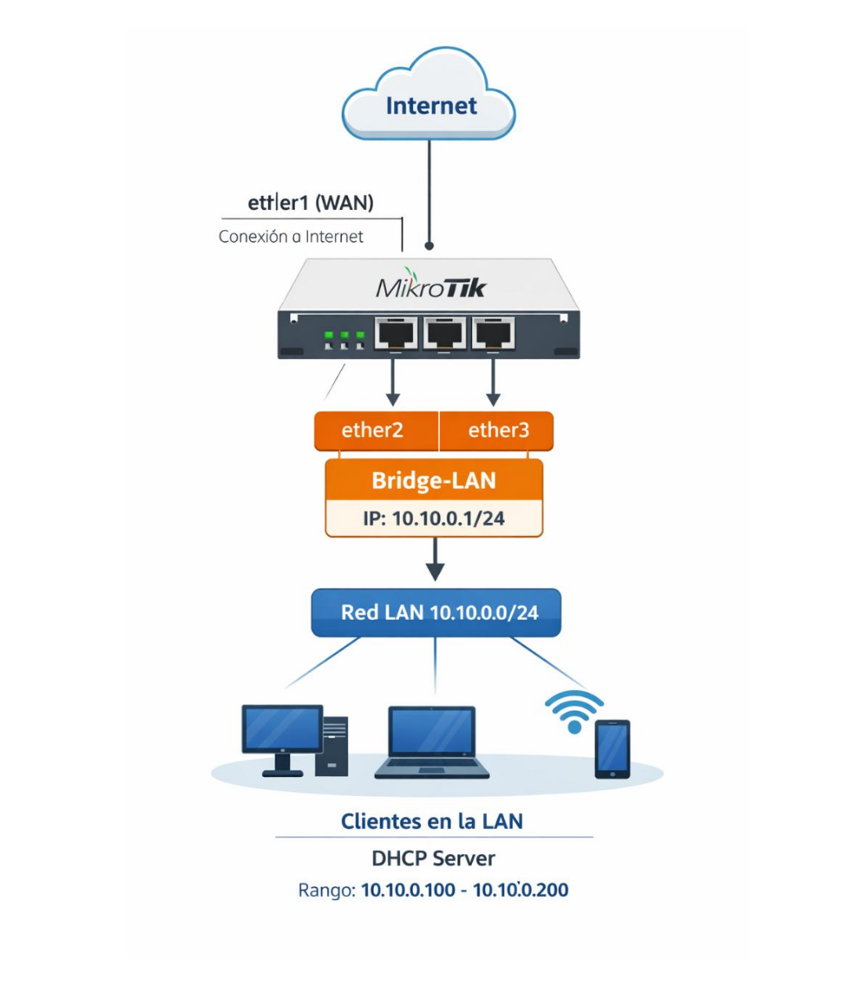
La configuración de la interfaz ether1, encargada de proporcionar la conexión a la
red WAN, no se abordará en este documento, ya que fue tratada en detalle en los
tutoriales de la semana pasada.
Del mismo modo, no se explicará la creación del bridge que agrupa las interfaces
ether2 y ether3, ni la asignación de la dirección IP al bridge, puesto que estos
aspectos ya han sido desarrollados y validados en el documento anterior.
Estado inicial esperado del router
Antes de ejecutar el asistente de configuración de DHCP, es importante comprobar
que el router se encuentra en un estado inicial coherente con el escenario
propuesto. Esto evitará conflictos y permitirá que el asistente genere la
configuración de forma correcta.
En este punto, el router debe cumplir las siguientes condiciones:
• Existe un bridge de LAN que agrupa las interfaces internas (por ejemplo,
ether2 y ether3).
• El bridge tiene asignada una dirección IP estática, que actuará como puerta
de enlace de la red local (por ejemplo, 10.10.0.1/24).
• No existe ningún servicio DHCP activo sobre el bridge ni sobre las
interfaces LAN.
• El router dispone de conectividad a Internet a través de la interfaz WAN
(ether1), aunque este aspecto no se validará en este documento.
Antes de continuar, se recomienda verificar el estado del router ejecutando los
siguientes comandos:
Comprobación de bridges:
/interface/bridge/print
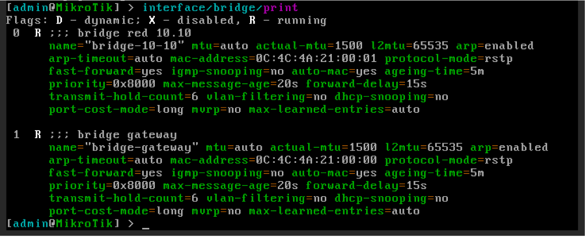
Comprobación de puertos asociados a los bridges:/interface/bridge/port/print
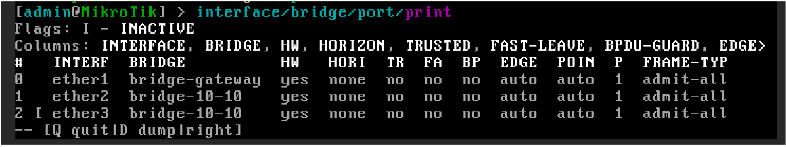
Comprobación de direcciones IP:/ip/address/print
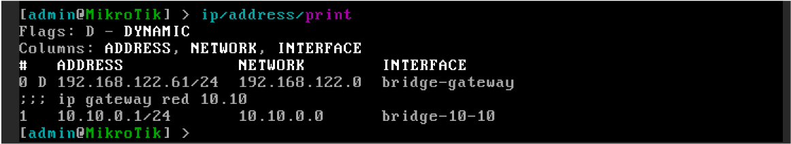
Comprobación de servicios DHCP existentes:
/ip/dhcp-server/print
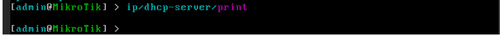
Si el router cumple estas condiciones, se puede proceder con seguridad a la
ejecución del asistente de configuración de DHCP.
Creación del servicio DHCP Server mediante la ejecución del asistente
DHCP Setup permite desplegar un servidor DHCP funcional de forma guiada. Este
asistente no introduce nuevos conceptos, sino que automatiza la creación de los
mismos elementos que se configurarían manualmente:
• Pool de direcciones IP
• Parámetros de DHCP Network
• Activación del servicio DHCP
El asistente se ejecuta desde la línea de comandos mediante la siguiente
instrucción:
ip/dhcp-server/setup
secuenciales. Cada una de ellas corresponde a una parte concreta de la
configuración interna del servicio DHCP.
Es fundamental comprender que cada respuesta genera uno o varios objetos de
configuración reales, visibles posteriormente mediante los comandos print.
Aunque el asistente facilita enormemente el despliegue inicial, es importante
remarcar que no valida el diseño de red ni comprueba si las decisiones tomadas
son las más adecuadas para el escenario. Por este motivo, su uso debe ir siempre
acompañado de una revisión posterior de la configuración generada.
En primer lugar, el asistente solicita la interfaz de red sobre la que se activará el
servicio DHCP. En este escenario, seleccionamos el bridge bridge-10-10, ya que
representa el dominio lógico de la red LAN.
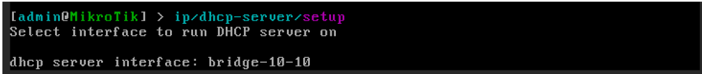
A continuación, el asistente solicita el espacio de direcciones IP de la red.
RouterOS propone automáticamente un valor basado en la dirección IP configurada
en la interfaz seleccionada en el paso anterior. Para este ejemplo, se acepta la
propuesta 10.10.0.0/24.
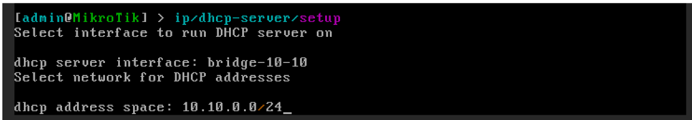
Una vez definido el espacio de direcciones, el asistente solicita la dirección IP de
la puerta de enlace (gateway) de la red. De nuevo, RouterOS genera una
sugerencia coherente con la configuración existente. En este escenario, se
mantiene la dirección 10.10.0.1 como gateway de la red.
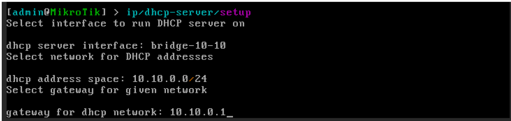
El siguiente parámetro corresponde al rango de direcciones IP que podrá asignar
el servicio DHCP, a partir del cual se creará el pool de direcciones. Para este
laboratorio, se define el rango 10.10.0.100-10.10.0.200.
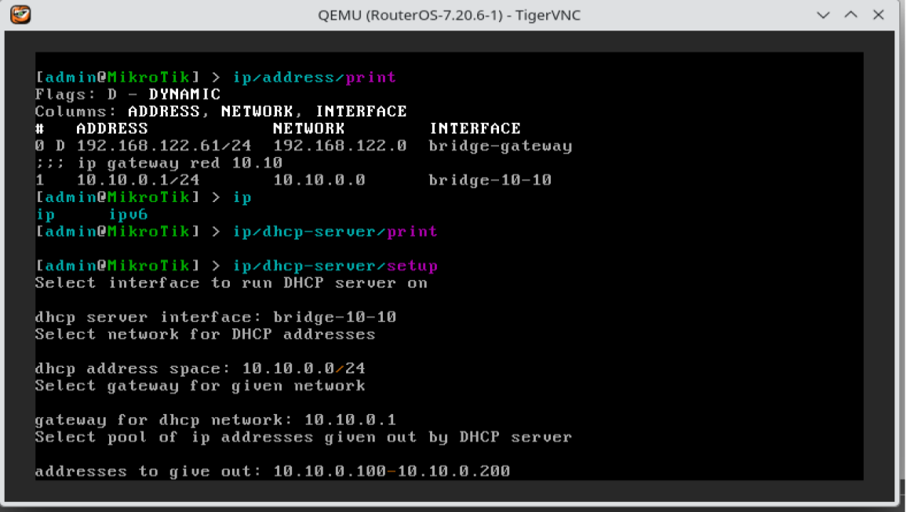
Posteriormente, el asistente pregunta si se desean configurar servidores DNS que
serán proporcionados a los clientes. En este caso, se responde afirmativamente e
introducimos las direcciones 10.10.0.1 y 8.8.4.4.
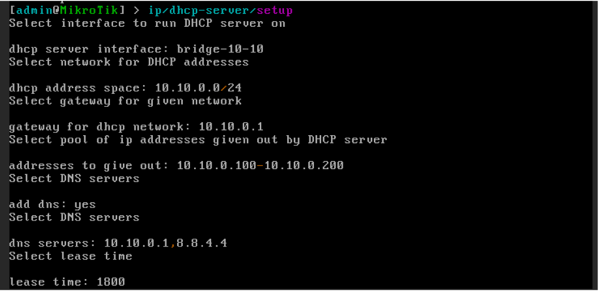
Por último, el asistente solicita el tiempo de concesión (lease time) de las
direcciones IP. Para el ejemplo actual, se mantiene el valor por defecto, 1800
segundos, suficiente para un entorno de laboratorio.
Una vez completadas estas preguntas, RouterOS crea automáticamente todos los
elementos necesarios para el funcionamiento del servicio DHCP, que serán
analizados y verificados en la siguiente sección.
Comprobación de la configuración aplicada
Una vez finalizado el asistente de configuración del servidor DHCP, es
imprescindible verificar que todos los elementos se han creado correctamente y
que el servicio está operativo.
Podemos realizar esta comprobación desde la línea de comandos (CLI), ya que
permite validar cada componente de forma precisa.
Comprobamos que el servidor DHCP está creado, habilitado y asociado a la interfaz
correcta:
Ip/dhcp-server print
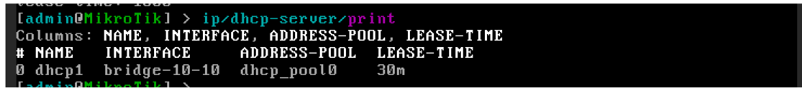
Confirmamos:
• Que el servidor aparece como enabled=yes.
• Que la interfaz asociada es bridge-10-10.
• Que el estado es running.
A continuación, validamos que la red DHCP se ha creado con los parámetros
correctos:
ip/dhcp-server/network/print
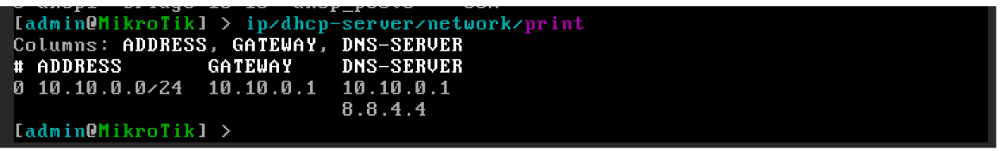
Comprobamos que se han credo correctamente los siguientes parámetros:
• Red: 10.10.0.0/24
• Gateway: 10.10.0.1
• Servidores DNS: 10.10.0.1, 8.8.4.4
Verificamos que el rango de direcciones IP dinámicas se ha creado correctamente:
Ip/pool/print
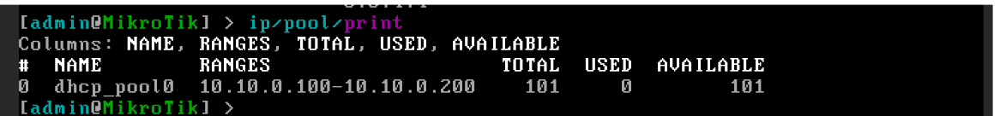
Debemos encontrar un pool con el rango 10.10.0.100-10.10.0.200
También podemos comprobar que los clientes están recibiendo direcciones IP del
servidor DHCP:
ip/dhcp-server/lease/print
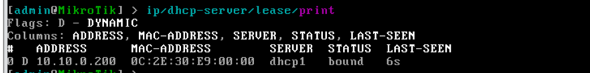
En este listado aparecerán los dispositivos conectados, mostrando:
• Dirección IP asignada
• Dirección MAC
• Estado de la concesión (bound)
Validación del servicio DHCP
Para comprobar el correcto funcionamiento del DHCP Server, podemos conectar
cualquier equipo cliente a la interfaz ether2 del router. En este ejemplo se ha
utilizado una instancia de Alpine Linux como cliente DHCP.
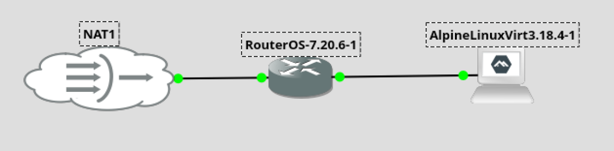
Una vez iniciada la instancia, abrimos la consola y forzamos la renovación de la
dirección IP ejecutando.
udhcpc -i eth0
DHCP, incluyendo la solicitud y la concesión de la dirección IP por parte del
servidor.
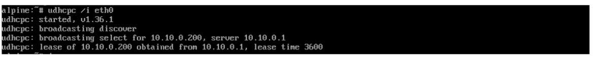
Verificamos la configuración de red asignada al cliente con:
ip a
previamente en el router MikroTik (10.10.0.100–10.10.0.200)
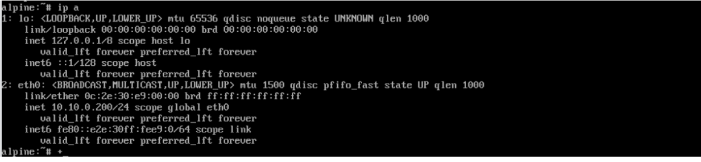
Desde la consola del router, es posible confirmar la asignación revisando el lease
creado al conceder la IP al cliente:
ip/dhcp-server/lease/print
el estado de la asignación, confirmando que el proceso DHCP se ha completado
correctamente.
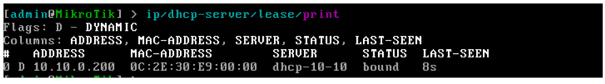
Este procedimiento valida que el DHCP funciona correctamente y que los equipos
conectados al bridge reciben su configuración IP automáticamente, tanto desde el
cliente como desde el servidor.
Comprobación de conectividad entre el cliente y el router
Para asegurarnos de que la red local y el DHCP funcionan correctamente, es
importante verificar la conectividad entre el cliente y el router.
Desde el terminal de la instancia Alpine Linux, comprobamos la conectividad hacia
la puerta de enlace de la red (el bridge del router) ejecutando:
ping 10.10.0.1
adecuada y puede comunicarse con el router.
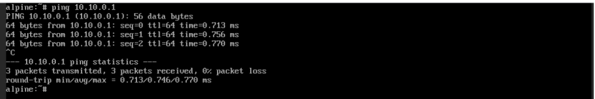
De manera inversa, podemos comprobar que el router puede comunicarse con el
cliente.
Primero, revisamos en el lease del DHCP Server la IP asignada al cliente
ip/dhcp-server/lease/print
(por ejemplo, 10.10.0.200).
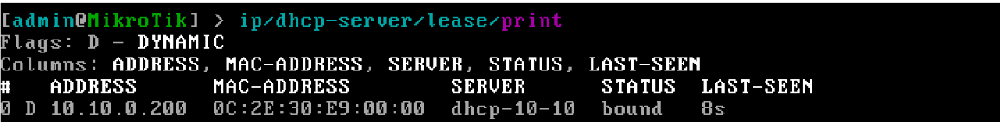
A continuación, ejecutamos un ping desde la consola del router hacia el cliente.
ping 10.10.0.200
el router y el cliente funciona correctamente, y que el DHCP ha asignado la IP de
forma adecuada.
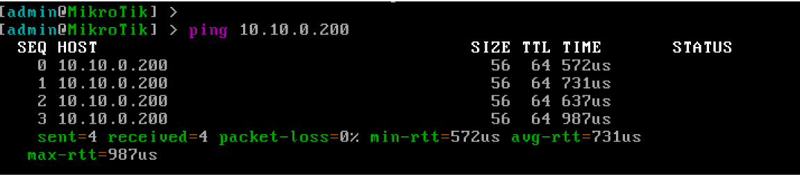
Este procedimiento garantiza que el cliente puede comunicarse con la puerta de
enlace y que el router puede llegar al cliente, estableciendo así la base para la
conectividad interna y futura salida a Internet.
Eliminando la configuración aplicada.
Dado que el asistente genera la misma configuración que el proceso manual, para
deshacer la configuración, seguiremos el procedimiento descrito en el anterior
documento.